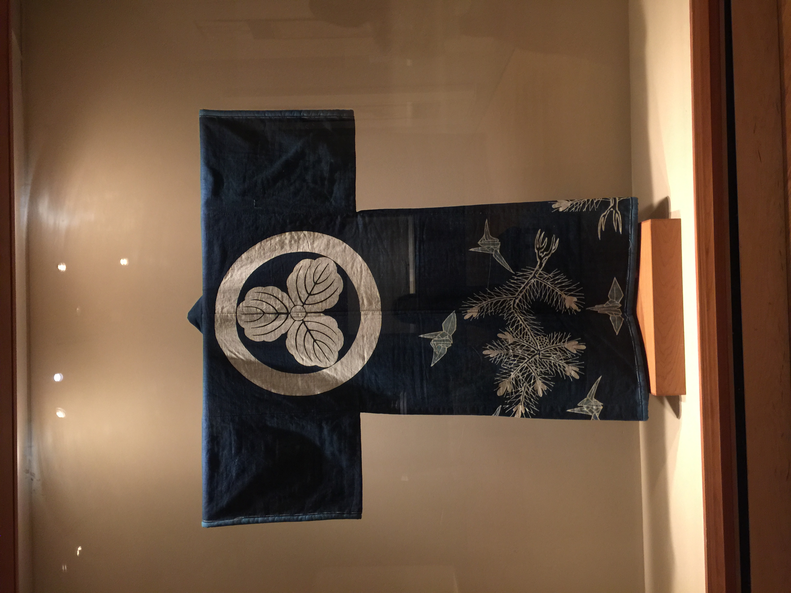

Blue-and-Red Laced Suit of Armour

17th Century, Japan
This suit of Japanese armour is lightweight and designed to protect the body in close combat. It is fitted with a face mask, forearm sleeves, hip guards, and bear-fur boots. It was made for the Tokugawa family, which ruled Japan for almost 250 years.
Padded Comforter with Crest and Origami Cranes
Early 20th Century, Japan
This comforter(𝘒𝘢𝘪𝘮𝘢𝘬𝘪 in Japanese) has sleeves and a collar to prevent it from falling off. It also has the groom's family crest on it. Comforters like this were sometimes used in a bridal trousseau.